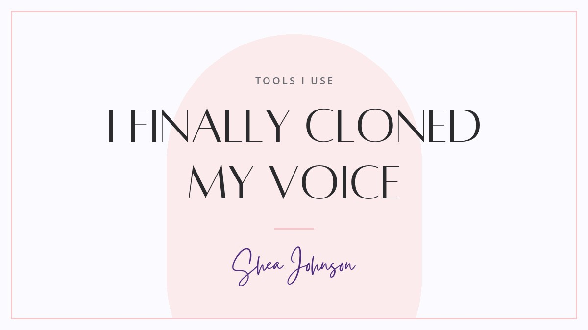

I finally cloned my voice using ElevenLabs.io.
This was my second attempt.
The first was years ago when I first discovered the platform.
Now, years later, I finally recorded a 2-hour sample, uploaded it, and generated a test script.
One day I was testing it out while on the phone with a friend.
She was listening to my sample play in the background.
She loved it.
She was raving about it.
And as I listened closely — it did sound like me.
Impressively.
Shockingly.
And a bit eerily.
I started getting visions of that movie Us starring Lupita…
The voice sounded like me.
But during some parts, the tone changed.
A high pitch here.
A deep baritone there.
I wondered — did I need a better sample? A longer one? Had I changed my pitch too many times while recording?
Then I learned something important.
Adjusting the settings in the sidebar helps the tool understand the purpose and tone you’re going for.
And you can actually ask their AI assistant — El — to adjust the settings for you.
I love speaking to her.
She’s super knowledgeable.
You can ask her anything in natural language.
And her responses will blow you away.
I had tons of questions about features I’d never tried.
She walked me through different tabs, gave me a tour, and even adjusted settings automatically.
Another breakthrough was learning how to format my scripts.
This helps the voice read it the way I actually want it spoken.
Here’s what I mean…
How I used to paste my scripts:
Find a comfortable position and take a slow breath in... and release.
This track is about worthiness.
So many of us are chasing success — while secretly believing we don't deserve it.
I am worthy of success.
Say it with me.
I am worthy of success.
Carry that with you.
How I format them now (with my AI assistant’s help):
find a comfortable position... and take a slow... breath in... <break time="1s"/>
this track... is about worthiness... <break time="1s"/>
so many of us... are chasing success... while secretly believing... we don't deserve it... <break time="1s"/>
i am worthy of success... <break time="1s"/>
if you'd like... repeat after me, gently... i am worthy of success... <break time="1s"/>
carry that with you...
The first version has no instructions for ElevenLabs to follow.
The second one does.
All I did was tell my AI assistant:
“I’m using ElevenLabs and my cloned voice. Please format my script for my guided meditation album.”
And it added the breaks — some two seconds, some three and a half.
I didn’t format this myself.
I just experimented to see if my AI assistant could help.
And it did.
Now — it still took some back and forth to get it right.
And honestly, it still didn’t come out exactly how I wanted.
I think that’s because my original clone isn’t as good as it could be.
The samples sound clear.
But they don’t sound 100% like me.
So I’m either going to re-record a better clone or use voices that have already been perfected.
Here’s what I think ElevenLabs is great for:
- White-label content
- Free but valuable content
- Training materials when your team doesn’t have time
- Social media voiceovers when you don’t have the manpower
- Digital products — YouTube videos, workshops, online courses
I plan to use it a lot more.
And I can’t wait to keep perfecting my cloned voice.
I’m also interested in generating a video clone of myself — since they’ve now integrated image and video into the platform.
I hope this was helpful.
See you in the next one.
Clone your voice.
Create content faster.
Let AI do the heavy lifting.